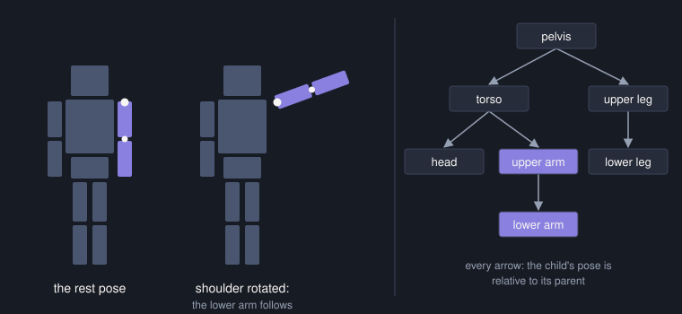

Models and animation data
glTF meshes, characters made of rigid parts, and their animations.
Needs the 3D template. A 3D game derives from
buz::game_3dand must linkbuz_renderer_3d.
There are two ways to load a model: as one mesh, for props, or with its full node hierarchy and animations, for characters and levels.
Models come from glTF files: .gltf (a text file next to its .bin and image files) or .glb (everything in one file). Blender exports both: File → Export → glTF 2.0. Paths are relative to the content folder.
load_mesh#
A crate, a barrel or a piece of wall moves as one object, even when the artist built it from several parts in Blender. buz::load_mesh merges all the parts of a file into a single buz::mesh:
#include "asset_management/model_loading.h"
#include "asset_management/texture_loading.h"
// in the constructor
m_crate_mesh = buz::load_mesh(engine, "my_game/models/crate.gltf");
m_crate_look.base_texture = buz::load_texture(engine, "my_game/models/crate.png");
// in on_render_world
world.draw(*m_crate_mesh, m_crate_look, transform);The mesh has no material: you pick one when you draw it, so the same mesh can be drawn in different colors.
In a glTF file, each part stores its vertices relative to its own node, and the node's pose (combined with the poses of its parents) says where the part sits. To merge the parts, load_mesh moves every vertex by that combined pose once, while loading, so each part ends up where it was in Blender. After that the poses are part of the vertices: you can move the whole mesh with the transform you draw it with, but not one of its parts. load_model, below, keeps the parts and their poses separate, so it leaves the vertices as they are in the file and the poses are applied when you draw each part.
load_model#
buz::load_model keeps the file's structure. A buz::model is a list of nodes, each with a name, a parent, a pose relative to that parent, and possibly a mesh with its material from the file. A material with alpha mode MASK in the file gets its alpha_cutoff from there (see Drawing in 3D):
std::optional<buz::model> soldier = buz::load_model(engine, "my_game/models/soldier.glb");The result is empty when the file could not be loaded; the console says why.
Characters made of parts#
A modern character is usually one mesh with a skeleton inside it: every vertex follows one or more bones, so the skin bends at the elbow. That costs work per vertex, every frame. Many characters on the first PlayStation were built differently, from rigid parts: a torso, a head, an upper arm and a lower arm, each its own small mesh that never bends. Moving a part means moving its whole mesh with one transform, which the console could do cheaply. You can still see where the parts meet, at the shoulders and the knees, and that look is part of the style.
The parts form a hierarchy in the file, and each node's pose is relative to its parent. A pose is mostly a rotation at the joint where the part attaches, so animating the character means turning its joints. Rotate the shoulder and the lower arm comes along, because its pose is relative to the upper arm:

A pose has a buz::joint_pose (translation, rotation, scale) per node: buz::model::get_rest_pose gives the pose as placed in the file. To draw a model you turn those local poses into a world transform per node, and draw every node that has a mesh with buz::world_renderer_3d::draw. That walk from local to world space is yours to write.
Levels#
A level is a model too, and a level designer can mark gameplay data with named empty nodes in Blender: a col_wall_3 box for collision, a patrol_a_0 point on a guard's route, a camera_2 position. Loop over the nodes, look at the names, and turn them into your game's data. Pick the naming rules with your designers and write them down.
Animations: keyframe clips#
A glTF file can hold animations. buz::load_model samples each one into a buz::keyframe_clip: a pose for every node, 30 times per second.
const buz::keyframe_clip* walk = soldier->find_clip("walk");
// the pose at frame 0: a buz::joint_pose per node
const std::vector<buz::joint_pose>& pose = walk->frames[0];The model only holds the frames. To play a clip, your code keeps track of how long it has been playing and blends between the two frames around that time. An animation player is a guided exercise that builds both step by step: first drawing a single pose, then playing, looping and blending from one clip into the next.